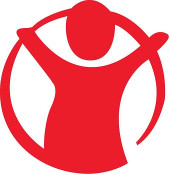

Donate to Refugees A non-comprehensive list of organizations accepting donations for refugees...

Medical Aid for Palestinians
Working for the health and dignity of Palestinians living under occupation and as refugees. MAP delivers health and medical care to those worst affected by conflict, occupation and displacement.
ANERA

ANERA renovate preschools, build roads, erect reservoirs, deliver vital medicines to clinics and hospitals and respond in times of crisis with humanitarian relief and aid.
Palestinian Centre for Human Rights
A non-profit company, dedicated to protecting human rights, promoting the rule of law and upholding democratic principles in the Occupied Palestinian Territory.
Medicines Sans Frontieres
MSF teams perform specialized surgery, post-operative care, and physiotherapy in Nasser hospital in Gaza’s Khan Yunis city; They also send emergency teams to Gaza and donate drugs and medical supplies.
Oxfam
Along withother initiatives Oxfam supports a hospital and mobile clinic to provide primary healthcare in Gaza. It supplys safe water and sanitation and runs a food-voucher project that ensures families have enough to eat and supports the local economy.
Baraka City
Rallumer la vie à Gaza, c'est sauver une partie de l'humanité. Notre bureau à Gaza, officiellement reconnu depuis 2012, se charge de réapprovisionner les Gazaouis en nourriture, couvertures, et autres besoins vitaux. L’antenne est également chargée de mettre en place des projets durables, qui vont permettre de relancer l’économie locale. Ainsi, la population va pouvoir subvenir à ses propres besoins.
Save the Children
Save the Children works in 120 countries. We save children’s lives. We fight for their rights. We help them fulfil their potential.Our teams are doing whatever it takes to get vital aid to children in Gaza. But the humanitarian needs are huge and we need your support to reach more children.
Save Gaza Project
Save Gaza Project works alongside displaced Palestinians to help them receive basic needs such as food, clean water, and clothing. They provide alternate shelter away from hospitals and schools, establish long-term shelters to provide safety for children, women, the elderly and injured, and deliver medicine and medical aid to those requiring critical medical attention.